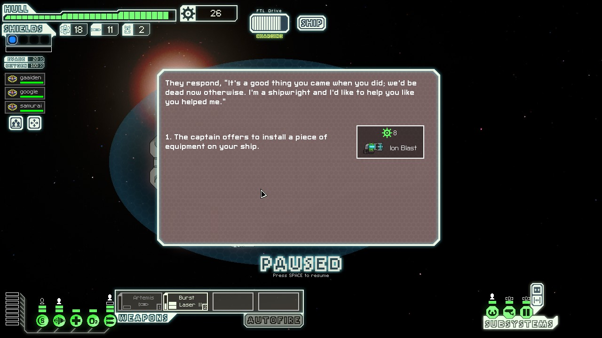

サムライと刺客の戦闘！敵は戦闘タイプのエイリアン！
FTLプレイレポート
"seiri is gone"
作：seiri is gone船内コンピューター かげ
前の航海の志半ばで倒れた(焼死)乗組員の名前を船につけ、我々は旅立った。
乗組員はキャプテンガイデン、ゴーグル、サムライの3人である。

なんか"Ion Blast"とかいう武器を手に入れた。敵の設備を一時的に無力化できるらしくなかなか役に立つ。
これがなければ何回死んでいただろうか。(死ぬ)
なにやらイベントが発生した。
なんかしらんが "すべてのリターンを最大化する" がモットーの我々は船員を送り込んだ。
"gaaiden is gone"
なんかガイデンが死んだ！
キャプテン死亡だ！船員たちは悲しみをあらわにし、ゴーグルは食べなくていいお菓子を食べ、サムライは切腹！
しかしサムライは薄れ行く意識の中で確かにガイデンの声を聞いた。
「「おのれ・・・ゆるさん・・・」」
・・・ガイデンが追いかけてくる！
「「何故・・・なぜ私を送り出した・・・」」
・・・捕まった！持っていかれる！
その時！サムライはゴーグルの応急措置で意識を取り戻した！
ガイデンから逃れたのである！
足りなくなった船員は商人から補給した。彼は"Arries"というヒューマンらしい。
「 よろしくな Arries。」
その時、ガイデンがArriesに憑依！
彼は"ガイデン II"になった！
「ゆるさん・・・ユルサン!!!!」
ガイデンはサムライを殺傷しようとしたが、ゴーグルによってなだめられた。
この時ガイデンの死から3日が経っていた。
イベント！なにか生き物を発見したのか！？
"全てのチャンスボールにフルスイングを" がモットーの我々は捕獲を試みる！
"GAIDEN II is gone"
ガイデン死亡！！！
「何もしらん」サムライは問い詰めるゴーグルに向かってそう言った。
「お前がガイデンに作戦があると呼び出した後にガイデンは死んだんだぞ！」
「ああ、俺たちは"話し合った"作戦を実行した。その結果不幸にも奴は死んだ。それだけだ。」
「とにかく・・・この事は本部にも報告させてもらう・・・！」
「・・・ぐっ」
・・・
自室(エンジンルーム)に戻ったゴーグルがつぶやく。
「クソッ、これじゃseiriの二の舞いだ・・・」seiriはガイデンによって殺されたのである。
海賊船を発見！もちろん我々は先制攻撃を仕掛ける！
しかし、敵はテレポーターで我々の船内に刺客を送り込む！刺客の破壊活動！外れまくるレーザー！破壊された酸素装置！
我々は決死のテレポートで逃走！刺客の継続的破壊活動！
サムライと刺客の戦闘！敵は戦闘タイプのエイリアン！
ゴーグルも加勢！いや加勢ではない！
ゴーグルの攻撃はサムライにあたっているし、サムライの攻撃もサムライにあたっている。
つまりはフレンドリーファイア・・・。フレンドリーファイアの織りなすバトルロイアル・・・！
退却！治療！刺客の破壊活動！戦闘タイプ相手では退くもやむなし！
しかし船員2名は舌戦を続けている！
「おまえの攻撃が当たっている！ウンコ！」
「オレの攻撃も当たっている！ウンコ！」
回復を終えた2人は弱りきった刺客の首をはね、酸素装置の修理へ向かった。
ゴーグルは窒息死した。
「フハハハハ・・・!!」
サムライの修理スキルがやたら上がる。
いらない物は売り払われ、足りなくなった物は商人から補給される。彼は"Lana"というエンジらしい。
「 よろしくな Lana。」
その時、ガイデンがLanaに憑依！
彼は"ガイデン3"になった！
この時、前回のガイデンの死から3日が経っていた。
彼はジーザスを名乗るようになっていた。
我々に払える物はない。
命以外は
我々は条件を飲んで立ち去った。
サムライはすでに体以外は動かなくなっていたし、ガイデンも2回の復活で力の大部分を持って行かれていたからだ。

エンジ"Tomas"が加わった。経緯は今更説明することでない。彼も拒否はできない。
法と社会は新たなる、いや改めて奴隷を生み出したのだ。
「 よろしくな Tomas。」
この言葉はすでに弔いに変わっていた。
"ガイデンIV"がそこにいた。今回からは詳細を語りたくない。
なんであれ、これで3人に戻った。
もちろん先制攻撃だ。金もほしい。
しかし、最大の理由はもう誰も正常な判断などできなくなっていたからだ。
敵はあからさまに強そうだ。我々は弱い。
クロークを駆使する敵に勝てず逃げ出した。我々はボロボロだ。
そして敵。
死亡。
いらない物は売り払われ、足りなくなった物は商人から補給される。
敵も、命も。
FTLプレイレポート "seiri is gone"
完